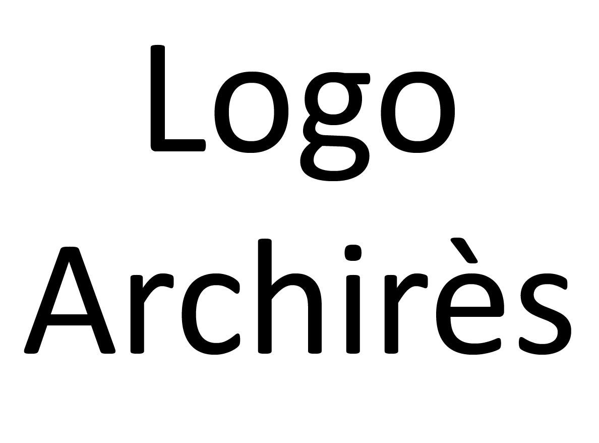

HUB
ert
Le hub des services numériques de la médiathèque
Dernière mise à jour : juin 2020.
, catalogue de la bibliothèque et du réseau des ENSA/P
Louise, plan pour trouver vos documents dans la médiathèque
Découvrez un document aléatoire !
Atlas numérique situant les travaux d'étudiants et d'enseignants de l'école
Sud Ouest accès premium
Kheox abonnement numérique (donne accès au Moniteur)
Liste de liens vers des bases de données ou des catalogues utiles pour vous
Pour l'architecture
Le RIBA (Royal Institute of British Architects)
La cité de l'architecture et du patrimoine
ArchiWebture : inventaires d'archives d'architectes en ligne
ArchInform, base de données internationale sur l'architecture
Bibliothèque numérique de la Cité de l'architecture et du patrimoine
Les vidéos de la Cité d'Architecture et du patrimoine
Médiathèque de l'architecture et du patrimoine : expositions virtuelles
Podcast de France Culture sur l'architecture
Arc en rêve, centre d'architecture
Station architecture, site de Mollat dédié à l'architecture
Archi-material, matériauthèque en ligne
Art et Jeux Vidéo : Architecture par S.E.L.L, Syndicat des éditeurs de logiciels de loisirs
Pour le paysage
La base de l'Ecole Nationale Supérieure du Paysage
Podcast de France Culture sur l'aménagement du territoire
Pour l'urbanisme
Le catalogue du CDU et Urbamet
Réseau Activités et Métiers de l'Architecture et de l'Urbanisme -RAMAU-
La base documentaire de l'agence d'urbanisme Bordeaux métropole Aquitaine
Podcast de France Culture sur l'urbanisme
Atlas et informations géographiques
Site du Conseil national de l'information géographique
Atlas des patrimoines
Base Mérimée : Immeubles protégés au titre des Monuments Historiques
Cadastre en ligne
Découpage infracommunal - Insee
CartoMundi – Valorisation en ligne du patrimoine cartographique
Audios et vidéos en ligne
Cours :
L'écologie appliquée à l'architecture : cours en ligne (par Grégoire Bignier à l'ENSA Paris Val de Seine)
Ce que l'économie circulaire fait à l'architecture : cours en ligne (par Grégoire Bignier à l'ENSA Paris Val de Seine)
Processus de conception : cours en ligne (par Emmanuel Doutriaux et Guillaume Meigneux (et des invités) à l'ENSA Paris Val de Seine)
Architecture et Écologie : MOOC (par Grégoire Bignier à l'ENSA Versailles)
Cours en ligne de l'ENSA Paris Val de Seine
Conférences & interviews :
Conférences filmées à l'ENSA Paris Val de Seine
Conférences filmées à l'ENSA Grenoble
Portail des conférences, interviews, vidéos et audios de l'ENSA Nancy
Portail des conférences filmées de l'ENSA Saint-Étienne
Portail des conférences filmées de l'ENSA Strasbourg
Portail des vidéos de l'École spéciale d'architecture
Portail des vidéos du Pavillon de l'Arsenal
Portail des conférences, interviews, vidéos et audios de l'ENSA Nancy
Vidéos de la Station architecture, site de Mollat dédié à l'architecture
Art et Jeux Vidéo : Architecture par S.E.L.L, Syndicat des éditeurs de logiciels de loisirs
Podcast :
Podcast de France Culture sur l'urbanisme
Podcast de France Culture sur l'architecture
Podcast de France Culture sur l'aménagement du territoire
Podcasts produits par Mollat
Langues
Portail multilingue :
Language Guide - Apprenez le vocabulaire de base de 16 langues
Loecsen - Initiation rapide et immersion dans 37 langeus différentes
AudioLingua - Enregistrements en 12 langues différentes
Européennes :
AnglaisFacile.com, cours d'anglais en ligne gratuits
EspagnolFacile.com, cours d'espagnol en ligne gratuits
AllemandFacile.com, cours d'allemand en ligne gratuits
Italien-Facile.com, cours d'italien en ligne gratuits
NLFacile.com, cours de néerlandais en ligne gratuits
Extra-européennes :
Ramou.net, leçons de chinois
Vidéos de la Télévision centrale de Chine, riches en informations culturelles
MesExercices.com, cours de japonais en ligne gratuits
Français :
FrançaisFacile.com, cours de français en ligne gratuits
Loecsen - Initiation rapide et immersion
Language Guide - Apprenez le vocabulaire de base
Citim, pour l'apprentissage du français du monde du travail
Amélioration du français
Retrouvez le sourire
Radio France International
Voyages en français
AudioLingua
TV5 Monde
Français plus avancé :
French by french
Bonjour de France
Conjuguons.net
Bescherelle : Testez-vous !
Plateformes d'apprentissage
FUN MOOC : France université numérique : formation en ligne ouverte à tous
Le portail numérique de l'enseignement supérieur
Ressources universitaires
La base documentaire de l'université de Bordeaux
Le catalogue national des bibliothèques universitaires
OSKAR Bordeaux - Open Science & Knowledge Archive
Persée, le site des revues de sciences humaines
Bibliothèque numérique du réseau Archirès
Collection des publications en ligne du Bureau de la recherche Architecturale, Urbaine et Paysagère
DUMAS base nationale de mémoires universitaires déposés
Mir@bel, portail d'accès à des textes intégraux ou des résumés d'articles de revues
Portail de ressources électroniques en sciences humaines et sociales
Collections numérisées de l'INHA
BASE - Bielefeld Academic Search Engine
Calames - Catalogue en ligne des archives et manuscrits de l'enseignement supérieur
Theses.fr - moteur de recherche des thèses en préparation et soutenues de France
Droits d'auteur
Diffusion de contenus culturels : quels droits, quelles démarches ?
Les guides Formadoct de l'Université de Bretagne Loire
Subpœna : un jeu sérieux sur le plagiat
Données ouvertes
L'Atelier Open Data de Bordeaux Métropole
Ressourcerie datalocale, plateforme de données ouvertes de Gironde
PIGMA, plateforme d'échange de données en Nouvelle-Aquitaine
Les bases de données ouvertes du Ministère de la Culture
Plateforme ouverte des données publiques françaises
DBpedia FR
DBpedia (anglais)
Catalogues de bibliothèques et archives non universitaires
Le catalogue des bibliothèques de Bordeaux
Les médiathèques de Bordeaux Métropole
Service du patrimoine et de l’inventaire d’Aquitaine
Le catalogue de la Bibliothèque nationale de France
Gallica, bibliothèque numérique de la Bibliothèque nationale de France et de ses partenaires
Archives numérisées de Bordeaux Métropole
Citoyenneté
Justice.fr, le portail du justiciable
Légifrance, le service public de la diffusion du droit
Service-public.fr, le portail unique de renseignement administratif et d'accès aux services en ligne
Numérique
Pix - Cultivez vos compétences numériques
Le RGPD explications détaillées par article
Comprendre le RGPD par le CNIL
Wayback Machine, archives des sites web
Éducation aux médias
CLEMI : le centre pour l'éducation aux médias et à l'information
Revue des médias : le magazine d'analyse des médias de l'INA
Collab' de l'info : vidéos par LUMNI
LUMNI : l'accès à la culture, au savoir et à la connaissance
Data Gueule
28 minutes - Info et société par Arte
Fact checkeurs :
Les décodeurs - par Le Monde
Stop l'infox ! par les chaînes du Groupe France Médias Monde
CheckNews.fr - Le service de journalisme à la demande de Libération